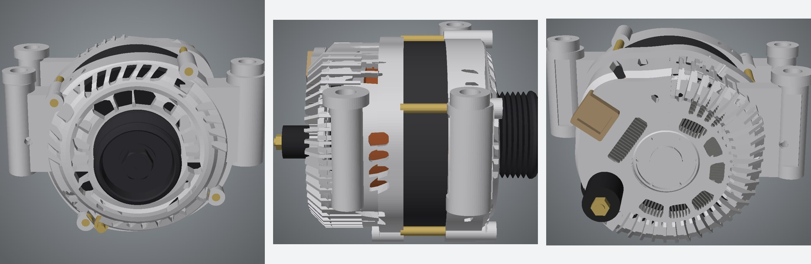
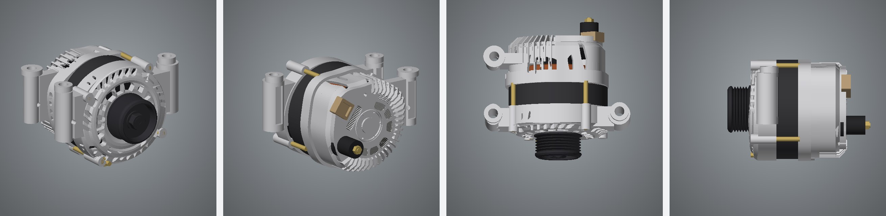

Three ordinary product photos — front, side and back — were turned into a solid, measured CAD model. No scanner, no tape measure. Every dimension comes from the photos, and every change to the model was kept only if it matched the photos better.
Loading model…

| Photo | Outline match | Edges matched | Edge precision | Depth error |
|---|---|---|---|---|
| Front | 96.8 % | 73.7 % | 79.7 % | 2.15 mm |
| Side | 95.6 % | 56.4 % | 59.5 % | 2.67 mm |
| Back | 96.1 % | 53.7 % | 63.4 % | 2.46 mm |
“Edges matched” is the share of edges visible in each photo that the model reproduces within 3 pixels. The gaps that remain are mostly fine casting detail — small ribs, bosses and the detail inside the vents.

Everything visible in at least one photo is measured from it. The top, the bottom and the unphotographed side are reasonable fill-ins.
Cast aluminium, black-coated steel, brass, copper and plastic are standard material settings, not colours taken from the photos.
This alternator was designed by hand with the measuring tools. An automatic version that takes any three photos is in progress.